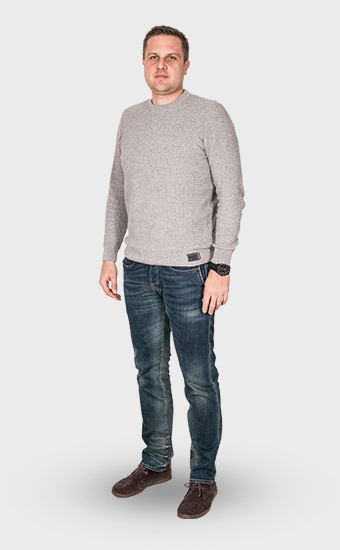
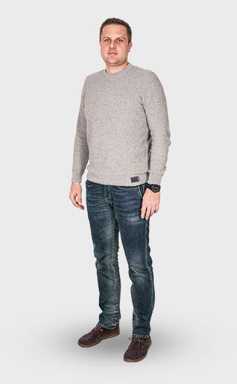

Dr Christian Menko DDSDentist
Both at work and in private he likes to consider himself as an explorer. He enjoys travelling to near and distant places, discovering uncharted territories, meeting interesting, extraordinary, even exotic people, tasting their food, learning about their habits.
To let others benefit from his research he also likes to share his findings be they instructive stories or the latest discoveries on the ever-evolving field of dentistry.
certificatesDr Yeji Grace LeeResident dentist
I am a general dentist from South Korea. I graduated from Pécs University in Hungary. I am passionate about my job in the clinic and I hope to interact with patients as a good friend.
I speak fluent English, Korean, Chinese, Hungarian and German.
In my spare time I go to the fitness center and love to do yoga. I am interested in drinking various types of tea and try different types of coffee beans.
certificatesDr Hye-Won JeonResident dentist
Dr. Hye Won Jeon DDS, graduated from Semmelweis University.
She is from South Korea, went to USA and graduated high school and spend few years in college in Oregon.
She loves to meet new people from different countries and to travel for experiencing new cultures.
She also loves to workout at the gym and take Salsa classes.
Szabó BarbaraDental hygienist
This is her first job. She loves to speak with the patients and supports them during the treatment.
She loves riding her own horse called "Remény" (Hope in English) whom she visits her every day. She enjoys her free time with her friends visiting the cinema, concerts or just having fun.
Kondor-Tar AndreaDental nurse
She has been in business for 10 years now. Her goal is to achieve the patients' maximal satisfaction at the doctors' side.
She loves flowers, especially lavender. She has a collection of 64 plants, from which she makes jam and syrups. She visits Tihany at Lake Balaton every year where she enjoys the huge lavender fields.
Menyhárt PetraPhysiotherapist
Her motto is that empathy builds connections quickly. This helps people to be more open to her and this is a key thing as a physiotherapist. She is always improving her knowledge, to be able to help her patients in different fields. Her biggest dream is to learn the "Dévény" method, so she can work with children, too.
She loves to travel, does cross-fitness and sports.
Asztalos AttilaMasseur
He used to be an engine driver which enabled him to travel a lot. After the birth of his first child he decided to spend more time with his family so he became a masseur. He loves to be around people, loves to care, help them to ease their pain.
His hobbies are fishing, cycling, soccer and other sports.
Nagy KatalinRecepcionist
She has been working for 15 years as dental recepcionist. It is quite an experience for her to meet people of different nationalities. She tried several other jobs earlier but this is the one she likes the most.
She spends her free time with her family and friends. She loves to travel, do yoga and nia.
 

Dr Bátorfi ÁrpádAnaesthetist
I graduated in 2003 at the University in Pécs at the faculty of general medicine. I successfully completed my professional examinations in the field of anaesthesiology and intensive therapy. I consider the work as an anaesthesiologist as very important and responsible, since our patients entrust their lives to us.
The positive aspect of my profession is that as a result of my work people don’t feel any pain or stress during treatments.
Póczáné Kusics MártaMedical assistant
I have been working as a medical assistant for more than three decades. In recent years I have worked with Dr Bátorfi as his anaesthetic assistant in various dental offices.
I am passionate about my job, just as about cooking and baking, two of my hobbies which my family enjoys as well. I am also fond of gardening, reading and I have lately taken pleasure in making beaded jewelry.
Szabó VivienApprentice
I am a dental technician and working right now as a medical assistant apprentice with HD-dental.
I spend much time with my friends making excursions or going to the cinema.
social
media